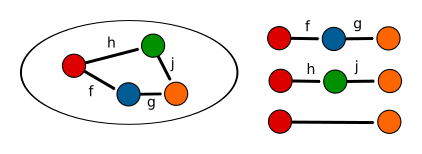

This is a multipart blog post on the structure of the mathematical field of Category theory and how it relates to real world programming.
Category theory distills the essence of a large variety of constructions in traditional set theory to more abstract context which can be used to reason about general concepts in computer science and mathematics.
If one were to try and describe the essence of category theory, it is that it is study of relationships between between mappings of elements, but at a level of generality where there is no notion of individual elements. Instead elements arise only out of their relationships between each other.
This tutorial is a humble attempt to provide a bridge between the mathematical literature and the everyday language of the working Haskell programming programmer. Any and all feedback is welcome!
A category $ C $ is a construction with three things:
A composition operation (.) which given two other morphisms yields a composite morphism denoted
\[ ( f . g ) \]
For each object $ A $ there is an identity morphism
\[ \text{id}_A \]
Unlike most discussions, I’m going to stop the mathematical discussion right here and go straight to code so as to not scare the math-phobic Haskell programmer away!
In Haskell we’re constantly dealing with categorical structures. In fact they’re baked the very foundations of the language translate, and a large part of Haskell can be cast nicely into categorical terms. We call this category HASK.
| Category Theory | Haskell | Examples |
|---|---|---|
| Objects | Haskell Types |
|
| Morphisms | Haskell Functions |
|
| Composition | Function Composition |
|
The set of all non-polymorphic Haskell types forms a category with Haskell functions as morphisms. For example:
head :: [Int] -> Int
head (x:_) = x
Prelude> head [1,2,3] = 1
The Haskell prelude also contains a function composition operator which should be familiar to all.
(.) :: (b -> c) -> (a -> b) -> a -> c
f . g = \ x -> f (g x)
And similarly a polymorphic identity function.
id :: forall a. a -> a
id x = x
Like most statically typed languages Haskell enforces types in composition. Namely:
f :: A -> B
g :: B -> C
f . g :: A -> C
This notion finds a direct analogue in the categorical definition of homsets.
A category is constructed out a collection of morphisms, a morphism has two associated values, its domain $ \text{dom} $ and codomain $ \text{cod} $. The collection of other morphisms in the category with the same values is called a homset as written $ \text{Hom}(A,B) $.
Given a specific category $ C $, we refer to the set of all morphisms in the category as the homset over C \[ \text{Hom}_C \] with:
\[ (A \rightarrow B) \in \text{Hom}(A,B) \]
For composition to be well defined we require that composition itself be a mapping only defined for:
\[ (.) : \text{Hom}(A,B) \rightarrow \text{Hom}(B,C) \rightarrow \text{Hom}(A,C) \]
Haskell programmers should be familiar with this notion of “aligning types”.
It is important to note that this definition is intentionally abstract. While in some concrete categories morphisms are functions in the traditional sense, in general homsets are merely abstract collections of 2-tuples with some abstract binary compostion operation subject to some constraints.
There is some ambiguity in the way that functional programmers and category theorists compose morphisms. Most category theorists would reverse the arguments to get composition as.
\[ (.) : \text{Hom}(B,C) \rightarrow \text{Hom}(A,B) \rightarrow \text{Hom}(A,C) \]
This can lend itself to some confusion and I will try to adopt the functional programmers notation wherever possible.
I will use the following tabular format for the definition of categories from here out. The first column is the type of construction, the second column is the constraints on the objects involved in the definition, and the third column is the definition of the construction.
| Category | ||
|---|---|---|
| Objects | \[ X, Y \in C \] | |
| Morphisms | \[ f \in \text{Hom}_C \] | \[ f: X \rightarrow Y \] |
| Composition | \[ f : X \rightarrow Y \\ g : Y \rightarrow Z \] | \[ f . g : X \rightarrow Z \] |
| Identities | \[ \text{For all } X \in C \] | \[ \text{id}_A : X \rightarrow X \] |
The corresponding definition table for a category is that of the laws for the category.
| Category Laws | ||
|---|---|---|
| Associativity | \[ f,g,h \in \text{Hom}_C \] | \[ ( f . g ) . h = f . ( g . h ) \] |
| Identity | \[ A \in C \\ f : A \rightarrow B \] | \[ f . \text{id}_A = \text{id}_B . f = f \] |
.
Categories are often written in bold. For example the category SET is often a motivating topic of discussion since classical set theoretic definitions are often generalized.
| Set | ||
|---|---|---|
| Objects | Set: $ S $ | |
| Morphisms | Total functions over $ S $ | ……………………… |
| Composition | \[ f : B \rightarrow C \\ g : A \rightarrow B \] | \[ f \circ g : A \rightarrow C \\ f \circ g = \lambda x. f (g a) \] |
| Identities | \[ A \in S \] | \[ \text{id}_A :: A \rightarrow A \\ \text{id}_A = \lambda x . x \] |
With the usual properties:
| Set | |
|---|---|
| Associativity | $ ( f \circ g ) \circ h = f \circ ( g \circ h ) $ |
| Identities | $ f \circ \text{id}_A = \text{id}_A \circ f = f $ |
If we define a toy Cat typeclass with the above definition and define an instance for Haskell (->) from GHC.Prim we have:
type Hask = (->)
class Cat cat where
ident :: cat a a
comp :: cat b c -> cat a b -> cat a c
instance Cat Hask where
ident x = x
comp f g = \x -> f (g x)We see that we of course recover the identitiy function and compostion from the Prelude.
instance Cat Hask where
ident = id
comp = (.)
-- Equivalent definition from Control.Category
instance Category (->) where
id = Prelude.id
(.) = (Prelude..)It is worth noting the common confusion that morphisms are not functions. It is the other way around, in the category SET functions are morphisms with objects as sets but this is a special case. In general morphisms are a pure abstraction which have structural similarity to functions.
A subcategory is a category contained within another category which also satisfies the category construction. A more advanced example that will be discussed later is that monads with an operation called Kleisli composition forms a category that is of much interest to Haskell programmers.
There are also some simple categories, the simplest being the $ 0 $ category, which is the category with no objects and no morphisms.
| 0 | ||
|---|---|---|
| Objects | \[ \emptyset \] | |
| Morphisms | \[ \emptyset \] | |
| Composition | * | * |
| Identities | \[ \text{For all } A \] | \[ \text{id}_A : A \rightarrow A \] |
The category laws are vacuously true for this category.
A slightly more interesting ( only slightly!) is the $ 1 $ category.
| 1 | ||
|---|---|---|
| Objects | singleton set | \[ {X} \] |
| Morphisms | \[ f : X \rightarrow X \] | |
| Composition | \[ (f . f) = \text{id}_X \] | |
| Identities | \[ \text{For all } A \] | \[ \text{id}_X : X \rightarrow X \\ \text{id}_X = \lambda x. X \] |
Since the only morphism in the category is also the identity all the laws hold merely by substitution.
It is also trivially true that $ 0 $ is a subcategory of $ 1 $ , $ 1 $ is also a subcategory of itself.
For the linear-algebra inclined, a space of vectors with linear mappings between vector spaces also forms a category with.
In the original definition of category we did not mention that the objects or morphisms necessarily form a set. Instead we stated in the definition that we need only have a collection of objects and morphisms.
A category which has its morphisms and objects in a set is referred to as a small category. A category which does not is referred to as a large category.
This begs the question as to whether we can form the category of all categories. The answer to this is no, because of the implications of self-referential sets. See Russell’s Paradox.
It is however very illuminating to look at the category of all small categories called CAT which does indeed form a category with objects as categories and mappings called functors as morphisms between categories.